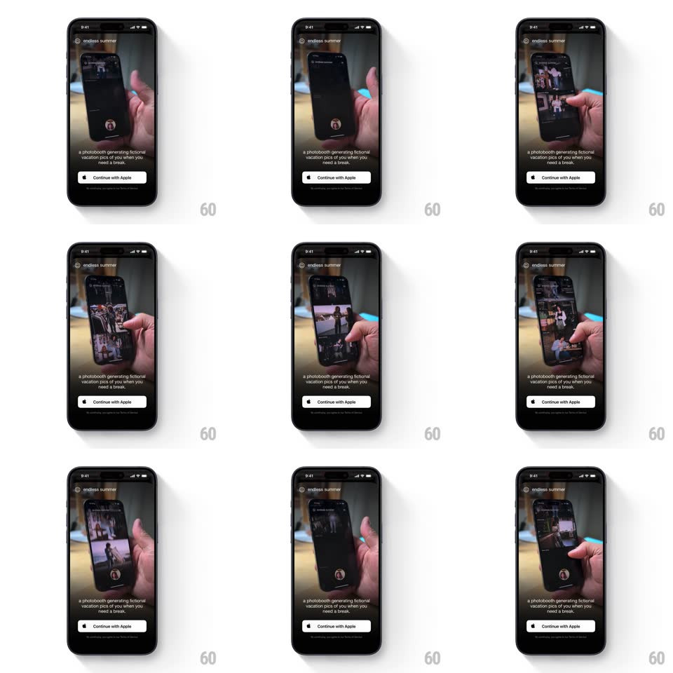

Media
Frame-by-frame

Rebuild this animation 1:1: Endless Summer's intro - a full-screen looping video of a hand holding a phone scrolling the photobooth app plays behind the wordmark, tagline, and a "Continue with Apple" button on the dark splash.

Rebuild this animation 1:1: Endless Summer's intro - a full-screen looping video of a hand holding a phone scrolling the photobooth app plays behind the wordmark, tagline, and a "Continue with Apple" button on the dark splash. ## Integration Integration: stack-agnostic spec - springs given as stiffness/damping, timed motions as duration + curve; map every value to your framework and animation library of choice. ## Scene Dark splash: the "endless summer" wordmark with a small globe icon top-left, a full-bleed background video (a hand holds a phone whose screen shows the photobooth grid being scrolled and tapped), the caption "a photobooth generating fictional vacation pics of you when you need a break.", and a white "Continue with Apple" pill with legal microcopy beneath. ## Motion spec Pattern: ambient video splash, indefinite loop. - Video: the background clip loops seamlessly - the phone screen scrolls the photo grid, taps into a shot, and returns; a slow zoom on the held phone (scale 1 -> 1.06 over 12s, alternate) keeps it alive. - Entrance: the wordmark fades in first (400ms), then the caption (300ms, +200ms), then the button rises 12px and fades in (300ms, +200ms). - Button: the white pill holds steady; on press it dims (opacity 0.85, 100ms) and springs back. ## Calibration - The video is dimmed (~55% brightness) so the white text always reads. - The loop point must be invisible - no jump cut between cycles. ## Reduced motion The video freezes on its clearest frame; no zoom. ## Don't miss - The in-video phone shows the actual product UI - this is a demo, not stock footage. - The caption is two lines max, lowercase, sitting just above the button.